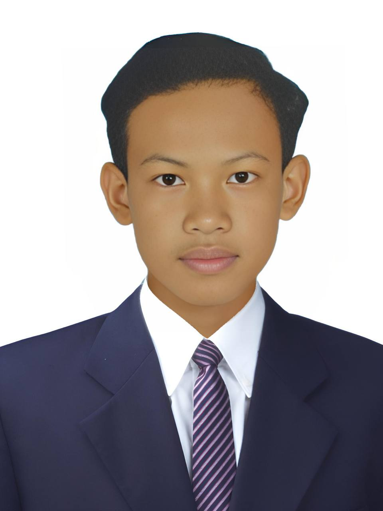

Junior Software Developer | IT Student
Download CVMotivated Information Technology student with a strong interest in software development and web technologies. Experienced in building academic and personal projects using Java, Spring Boot, HTML, CSS, JavaScript, and Bootstrap. Familiar with GitHub and eager to apply technical skills to real-world projects.
Phone
086 856 535
GitHub
Telegram
086 856 535
Location
Chroy Changvar, Phnom Penh, Cambodia